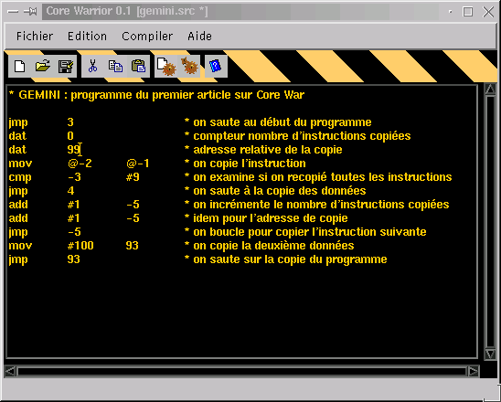
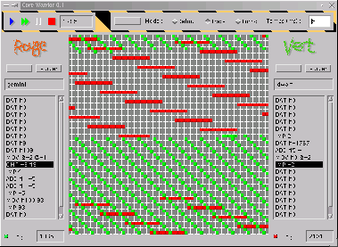
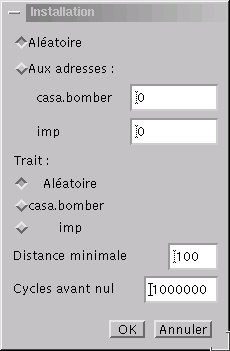

Core Warrior est un environnement de développement pour Core War écrit en Java (100 %, n'en déplaise à Bill), il peut donc fonctionner sur toute plateforme munie d'une machine virtuelle Java 1.1 (donc Linux, Windows, Macintosh, Solaris, etc...). Il comporte un éditeur, un compilateur et une machine virtuelle Core War. Le compilateur et la machine virtuelle peuvent etre utilisés en mode graphique ou en ligne de commande.
Editeur
Permet d'éditer le Red Code et de lancer, sans sortir de l'EDI, le compilateur et la machine virtuelle (le moteur Red Code).
Le menu "Fichier" permet de créer un nouveau document, d'ouvrir un programme existant, d'enregistrer le programme en cours d'édition, de l'enregistrer sous un autre nom et de quitter le programme. Les fichiers des programmes Red Code ont l'extension .src.
Le menu "Edition" permet de couper, copier, coller et rechercher une chaine dans le code.
Le menu "Compiler" permet de compiler le programme en cours d'édition et de l'exécuter dans le moteur. Les fichiers compilés ont le meme nom que le fichier source du programme, avec une extension .bin. Les fichiers compilés sont indépendants de la plateforme et peuvent donc etre copiés d'un ordinateur à un autre (meme de système différent) sans avoir à les recompiler.
Le menu "Aide" permet d'afficher une aide rapide sur le langage Red Code (résumant les différentes instructions du langage et les modes d'adressage). Il permet aussi d'afficher la boite de configuration de la fonte et des couleurs de l'éditeur (désolé, je ne savais pas trop où caser cette option).
Les icones de la barre sous le menu sont des raccouris souris pour les principales fonctions de l'EDI.
Je pense que ces fonctions sont suffisament explicites pour se passer d'explications plus poussées.
Moteur

Le moteur de Core Warrior est l'arène des combats de programmes. On peut y tester des programmes en cours de développement dans l'éditeur (le moteur est alors invoqué à partir de l'éditeur et le programme en cours est automatiquement chargé). On peut aussi le lancer indépendemment de l'éditeur pour faire un combat entre deux programmes.
Charger un programme
Pour faire tourner des programmes, il faut commencer par charger les programmes. Pour ce faire, cliquer sur le bouton [Charger] et sélectionner le programme désiré (les programmes chargés doivent etre compilés, donc avec une extension .bin). Le programme est alors affiché dans la fenètre de core dump. On peut enlever un programme chargé avec le bouton [Purger].
Installer les programmes dans le core
Lorsque les programmes ont été chargés, il faut les installer dans le core (l'arène de combat). Cliquer sur le bouton [Installer]. Il apparait alors la fenetre suivante :
Cette boite de dialogue permet de choisir l'adresse où l'on doit installer chaque programme. On peut aussi les installer aléatoirement (c'est l'option à choisir pour des combats ordinaires).
La distance minimale est celle séparant deux programmes (utile lorsqu'on choisit une installation à des adresses aléatoires).
Cycles avant nul indique le nombre de cycles avant que la partie soit déclarée nulle si aucun programme n'a planté. Une valeur de 1.000.000 peut sembler démesurée, mais la puissance des machines actuelles le permet amplement.
Après avoir cliqué sur [OK], les programmes apparaissent dans la représentation graphique du core. Le programme vert est représenté par des cases vertes, et le rouge par des cases rouges (original, je sais...).
Exécuter les programmes
Pour exécuter les programmes, il y a 2 méthodes :
Le champ de text "temps" indique le temps entre chaque instruction. Il faut l'adapter à la vitesse de sa configuration de manière à ce que le rafraichissement graphique de la fenetre de core puisse se faire entre deux instructions. Si le temps est trop court, plusieurs instructions sont tracées en meme temps sur le core, ce qui donne un affichage saccadé. N'est pas pris en compte pour le mode turbo.
Outils en ligne de commande
Afin de satisfaire les hostiles aux cliquodromes (salut Xavier :), le compilateur et le moteur peuvent etre invoqués en ligne de commande. L'intéret est d'automatiser des tournois pour lesquels un grand nombre de matchs est nécessaire.
Compilateur
Il faut se placer dans le répertoire du programme et taper en ligne de commande :
$ java -classpath $CLASSPATH:bin.jar casa.corewarrior.compilateur.Compilateur fichier.src
Où "fichier.src" est le nom du fichier à compiler. Le programme compilé sera placé dans le fichier "fichier.bin" du meme répertoire.
Il faut noter que si une erreur de compilation se produit, le fichier binaire est tout de meme écrit (jusqu'à l'instruction ayant provoqué l'erreur de compilation).
Moteur
On lance le moteur en mode texte en tapant sur la ligne de commande (dans le répertoire du programme) :
$ java -classpath $CLASSPATH:bin.jar casa.corewarrior.moteur.Moteur -option prog1.bin prog2.bin
Les options disponibles sont :
Les programmes sont chargés aléatoirement en mémoire et peuvent etre plus de deux (on peut ainsi organiser des combats entre 10 programmes simultanément :).
Note : les utilisateurs de Windows doivent remplacer $CLASSPATH:bin.jar par %CLASSPATH%;bin.jar.
Format des binaires
Les fichiers binaires générés sont constitués d'une suite d'instructions de 4 octets chacune. Une instruction a le format suivant :
J'ai choisi de coder la valeur de l'argument sur 12 bits de manière à avoir un terrain de jeu le plus vaste possible. De plus, 4096 cases sont représentables par un carré, ce qui colle mieux avec une représentation graphique du core.
{kind=link}